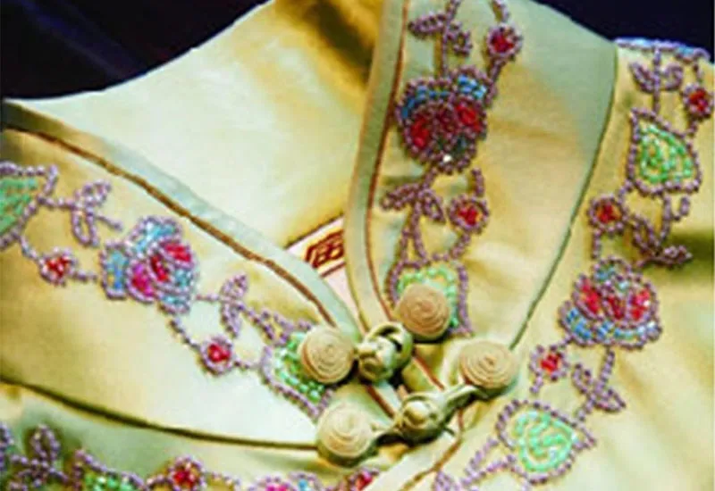
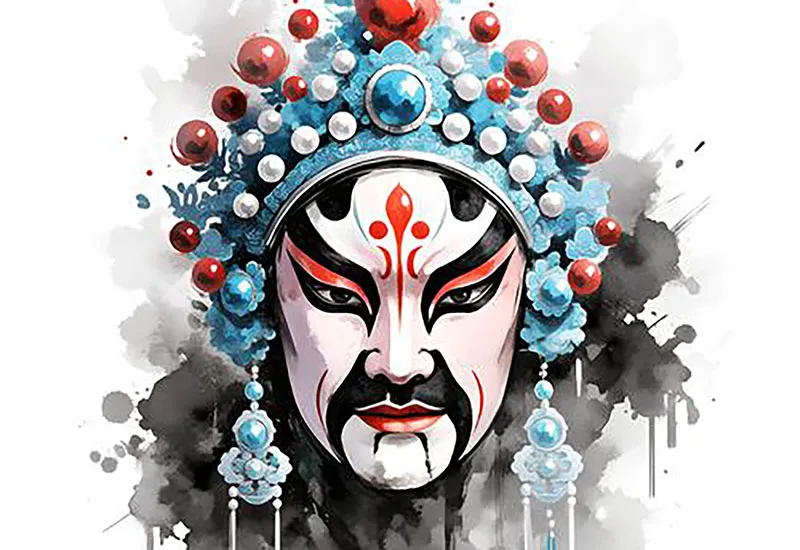
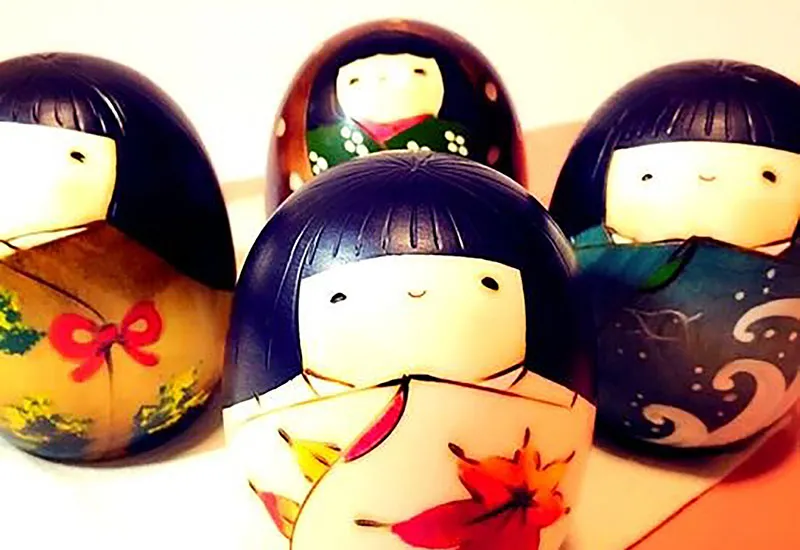
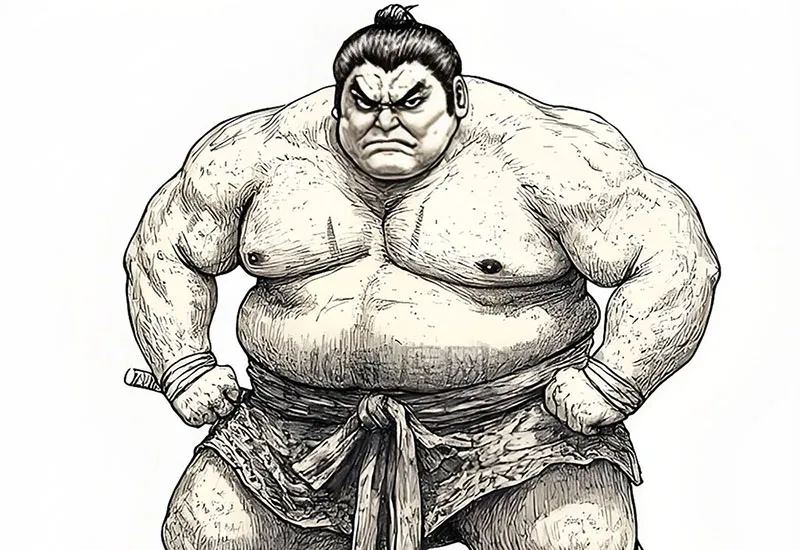
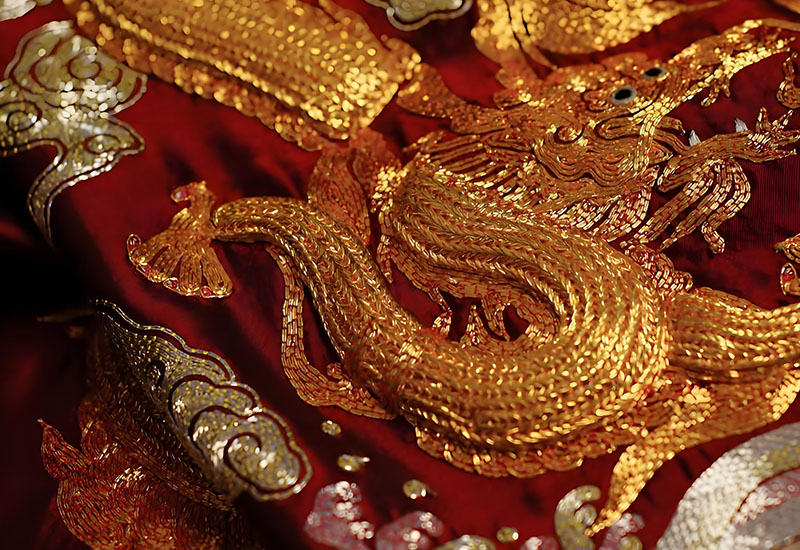
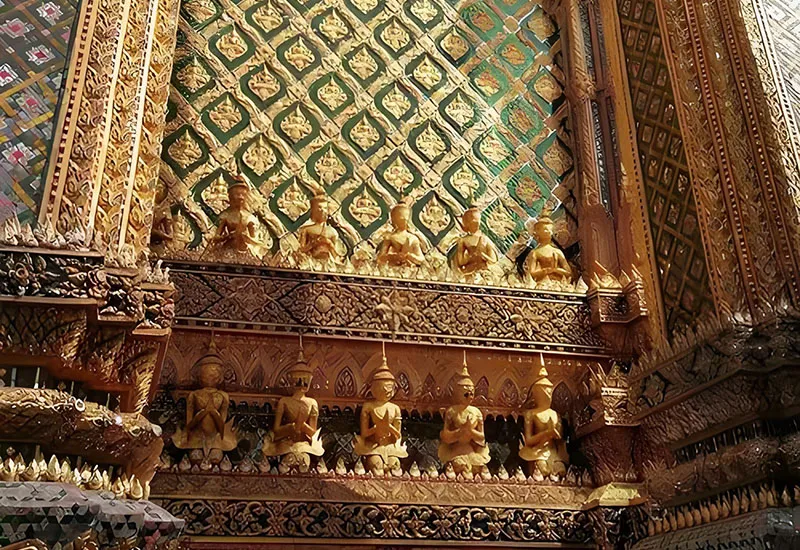
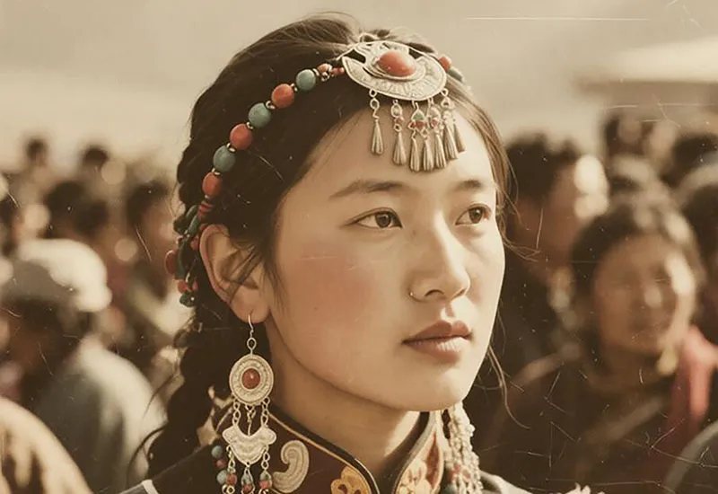
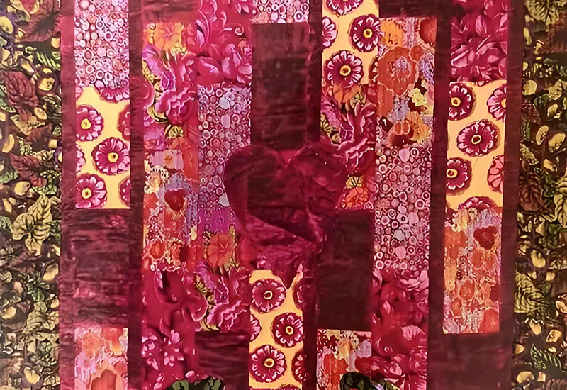

中華傳統文化風格
五千年傳承演進，古雅含蓄、對稱和諧、意境深遠、典雅莊重。

日本傳統文化風格
東瀛文化，簡約留白、侘寂之美、自然含蓄、靜謐雅致。

東南亞傳統文化風格
東南亞文化，色彩濃烈、自然熱帶、紋樣繁複、神秘奔放。
中華古典風格 Chinese Traditional Art

Chinese Cheongsam
將中華文化中的「旗袍藝術」融入現代服飾設計，是一種傳統與當代審美的對話。
設計者通常以流暢的剪裁線條，優雅的立領與盤扣語彙，重構東方女性傳統的含蓄氣質，使服飾在行走間呈現詩意一般的節奏。同時，絲綢紋理與細膩刺繡亦成為文化象徵，讓古典韻味在都市生活中重新綻放。

Chinese Opera Facial Makeup
將中華文化中的「京劇臉譜」藝術融入現代服飾設計，是將戲曲藝術轉化為當代美學語言。設計以鮮明色彩與對稱圖紋為靈感，使服裝如同流動舞台。
例如紅色象徽忠義、黑色寓意剛正、白色隱含機巧，各種意涵悠久而深遠，臉譜圖樣在布料上鋪展，如戲中角色般鮮活生動，使穿戴者彷彿行走於藝術與文化之間。
日式傳統風格 Japanese Culture Image

Japan Dolls
將日本文化中的「日式人形俑」藝術融入現代服飾設計，是在設計中以靜穆重疊的褶皺捕捉流動的時光，繾綣的絲線在布料間刻畫出木芥子的古拙。
像是一場關於「形」與「魂」的對談：將人偶凝練的線條轉化為衣襟的起伏，讓衣物在行走間如瓷面般瑩潤，於現代廓形中演繹一場跨越千年的寂靜繁花。

Japan Sumo Wrestling
將東瀛文化中的「日本相撲」傳統融入現代服飾設計，擷取土俵上的神聖瞬息，將「力」的量感揉入流動的垂墜縐褶。腰間重疊的繫帶，似力士跨越千年的剛勁凝望，於寬闊廓形中納入禪意。灑落的精鹽化作素白刺繡，在步伐間翻湧出儀式感的莊嚴。
這是一場布料靈魂的對峙，於方寸衣褶間，重塑相撲那份寂靜而厚重的東方美學。
東南亞藝術展現 Southeast Asian Art-Style

Royal Gold Thread Embroidery
將東南亞皇家文化中的「金絲刺繡」藝術融入現代服飾設計，仿若將破曉的曦光揉入衣襟。針腳綿密，勾勒出山川的脊骨與繁花的呼吸。
金屬的冷冽與絲綢的溫潤交疊，是一場榮耀與孤寂的對白。光影在起伏間流轉，如同一首永不凋零的敘事詩，讓千年的華美於現代廓形中，閃耀出神聖而克制的溫婉。

Thai Gilded Architecture
將泰式宫宇文化中的「鎏金建築」藝術融入現代服飾設計，揉碎了湄公河畔的粼粼波光，將佛龕邊緣的斑駁鎏金，重塑為衣襟上的華麗詩行。
細膩的流沙金線在素織布料上蜿蜒，勾勒出熱帶神話的肅穆與溫潤。金屬的冷冽與纖維的柔韌交疊，如曼陀羅在行走間綻放。這不只是裁衣，是將時光的灰燼與神性的光輝，一同披掛於此生。
少數民族傳承技藝 Southeast Asian Art-Style

Tibetan Traditional Jewelry
將西藏少數民族中的「金銀首飾」藝術融入現代服飾設計，如同揉碎山野的月光，將沉甸甸的民族銀飾鑲嵌於現代廓形，如同一場跨越千年的鏗鏘對白。每一枚雕花銀鈴，皆是行走中的清冽詩行；斑駁的錘揲紋理。
在布料起伏間低訴著圖騰的靈魂，冷峻金屬與柔韌纖維交織，讓神祕的山地傳說，於針腳間煥發出荒野而高貴的孤傲。

Ethnic Minority Patchwork Art
將東方少數民文化中的「拼布藝術」融入現代服飾設計，每一塊拼布皆是歲月的斷章，被刺子繡細細縫合，織就一場關於「補綴」的溫柔修行。
拼湊間不只是布料的解構，更是記憶的複寫。粗糲紋理中跳動著侘寂之心，讓破缺成為圓滿，讓時光的針腳在現代廓形間低吟，於行走中，翻閱那冊被歲月洗滌過的藍染詩篇。